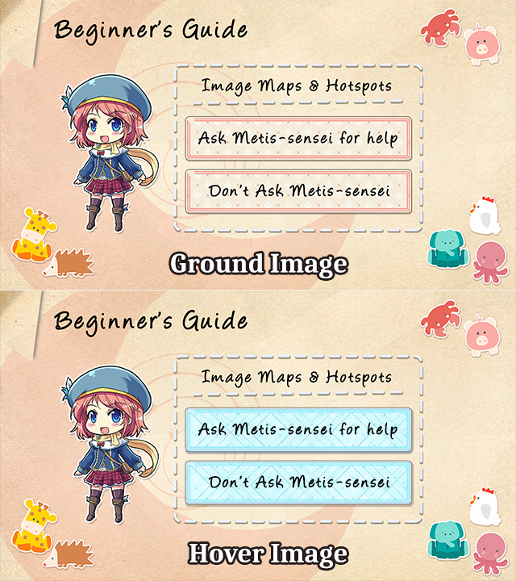
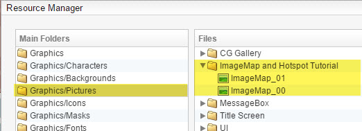
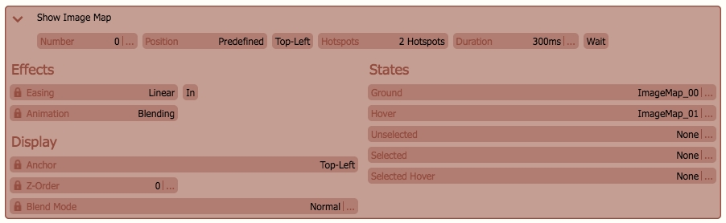
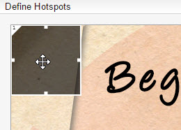
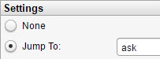
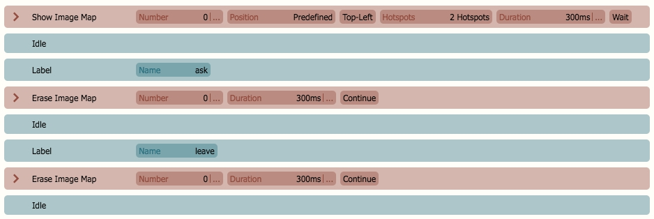
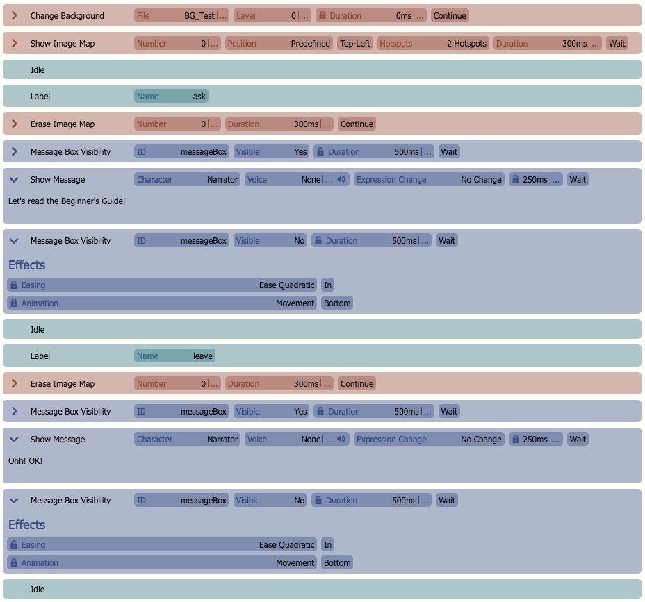
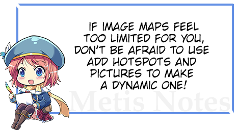

Image Maps
andHotspots. They are one of the ways for you to create your own customized GUI.什么是图像地图？一个图像地图
是一个带有可点击区域的图像，称为
热点，它们根据指定的**状态**被触发。 要了解其每个特定命令的功能，链接提供了对其功能的快速概述。准备你的 Graphics我们需要准备图像地图的两个实例。记住，图像的两个版本必须是相同的大小。
Ground
- 此图像是图像地图的“空闲”状态。Hover

- 此图像是图像地图的“激活”状态。 这将是当你将鼠标悬停或点击其热点
之一时图像的样子。完成后，让我们将图像导入我们的游戏。 只需将它们放在 Pictures 文件夹中。 我是这样做的：
设置图像地图现在我们已经准备好了资源，是时候将它们添加到 Scene Content 中了！创建一个新场景。

Click the
Picture -> Show Image Map.


设置场景现在是时候为热点设置响应了。 最简洁的形式看起来是这样的：你必须在

Image Map
之后和
Labels


HTML
